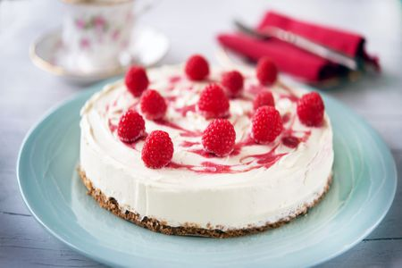
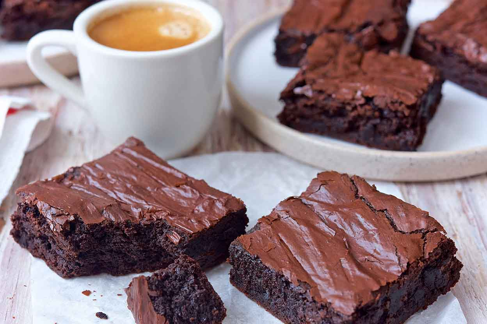

Dessert Recipes

White Chocolate Rasberry Cheesecake
Ingredients
- 1 cup chocolate cookie crumbs.
- 3 tablespoons white sugar.
- 1/4 cup butter, melted.
- 1 (10 ounce) package frozen raspberries.
- 2 tablespoons white sugar.
- 2 teaspoons cornstarch.
- 1/2 cup water.
- 2 cups white chocolate chips.
- 1/2 cup half-and-half cream.
- 3 (8 ounce) packages cream cheese, softened.
- 1/2 cup white sugar.
- 3 eggs.
- 1 teaspoon vanilla extract.
Directions
- In a medium bowl, mix together cookie crumbs, 3 tablespoons sugar, and melted butter. Press mixture into the bottom of a 9 inch springform pan.
- In a saucepan, combine raspberries, 2 tablespoons sugar, cornstarch, and water. Bring to boil, and continue boiling 5 minutes, or until sauce is thick. Strain sauce through a mesh strainer to remove seeds.
- Preheat oven to 325 degrees F (165 degrees C). In a metal bowl over a pan of simmering water, melt white chocolate chips with half-and-half, stirring occasionally until smooth.
- In a large bowl, mix together cream cheese and 1/2 cup sugar until smooth. Beat in eggs one at a time. Blend in vanilla and melted white chocolate. Pour half of batter over crust. Spoon 3 tablespoons raspberry sauce over batter. Pour remaining cheesecake batter into pan, and again spoon 3 tablespoons raspberry sauce over the top. Swirl batter with the tip of a knife to create a marbled effect.
- Bake for 55 to 60 minutes, or until filling is set. Cool, cover with plastic wrap, and refrigerate for 8 hours before removing from pan. Serve with remaining raspberry sauce.

Best Brownies
Ingredients
- 1/2 cup butter.
- 1 cup white sugar.
- 2 eggs.
- 1 teaspoon vanilla extract.
- 1/3 cup unsweetened cocoa powder.
- 1/2 cup all-purpose flour.
- 1/4 teaspoon salt.
- 1/4 teaspoon baking powder.

Frosting
- 3 tablespoons butter, softened.
- 3 tablespoons unsweetened cocoa powder.
- 1 tablespoon honey.
- 1 teaspoon vanilla extract.
- 1 cup confectioners' sugar.
Directions
- Preheat oven to 350 degrees F (175 degrees C). Grease and flour an 8-inch square pan.
- In a large saucepan, melt 1/2 cup butter. Remove from heat, and stir in sugar, eggs, and 1 teaspoon vanilla. Beat in 1/3 cup cocoa, 1/2 cup flour, salt, and baking powder. Spread batter into prepared pan.
- Bake in preheated oven for 25 to 30 minutes. Do not overcook.
- To Make Frosting: Combine 3 tablespoons softened butter, 3 tablespoons cocoa, honey, 1 teaspoon vanilla extract, and 1 cup confectioners' sugar. Stir until smooth. Frost brownies while they are still warm.
The entire information of this page has been lifted from All Recipes' page on Desserts.
Return to the top of the page.